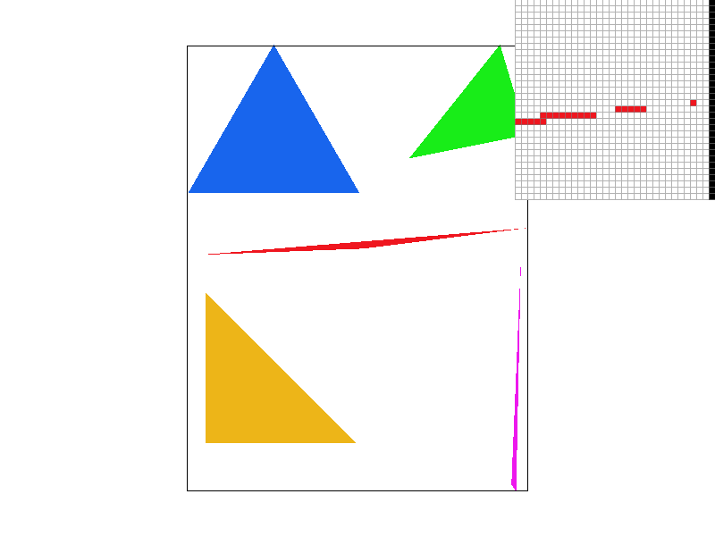
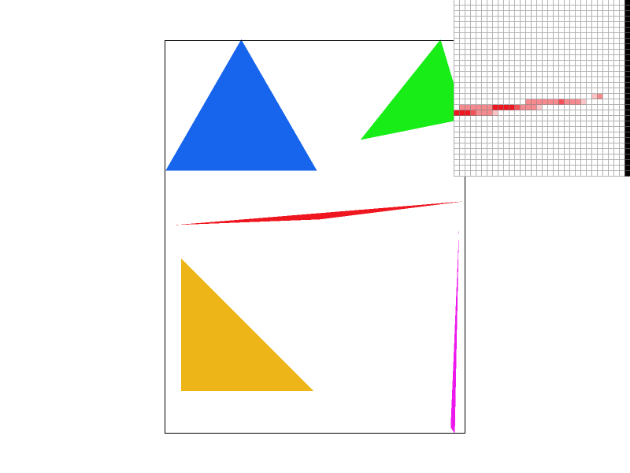
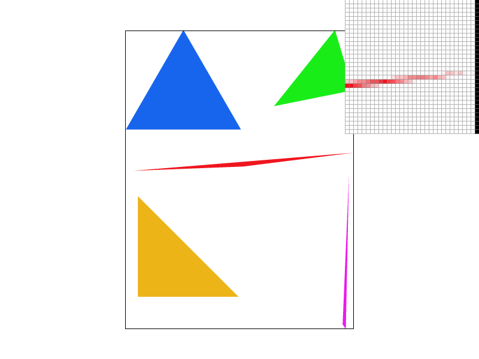
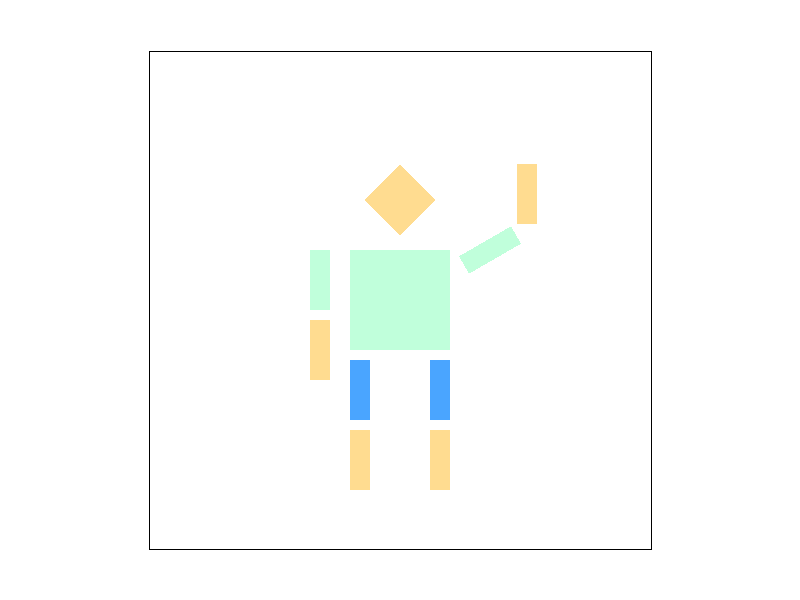
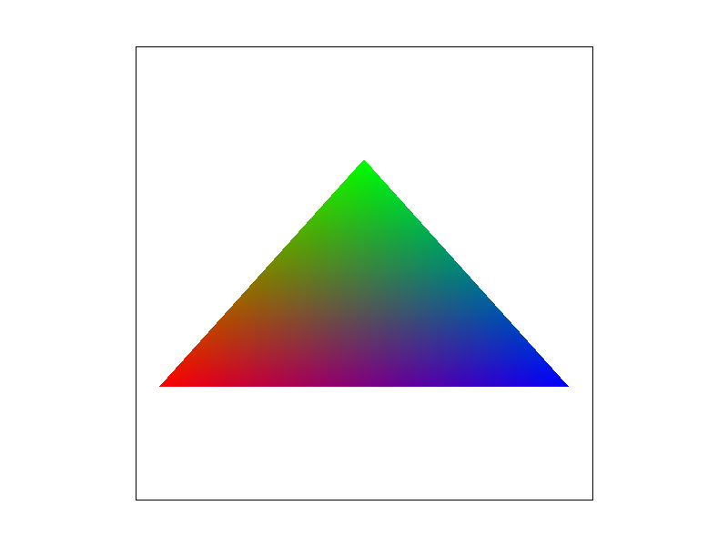
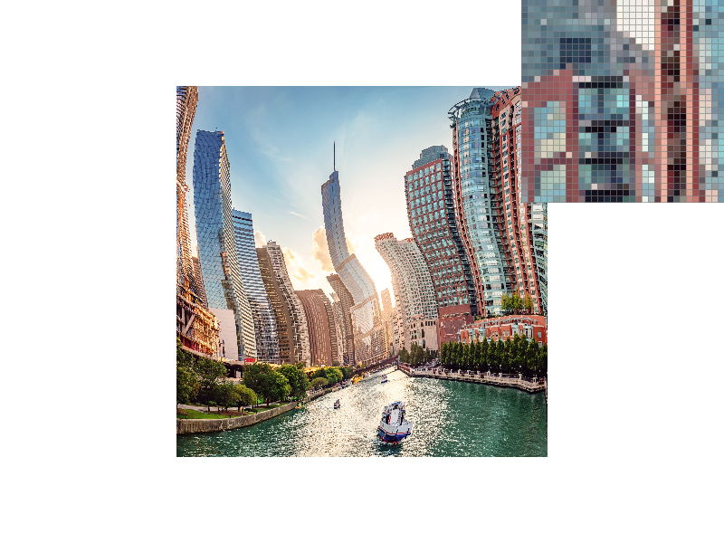
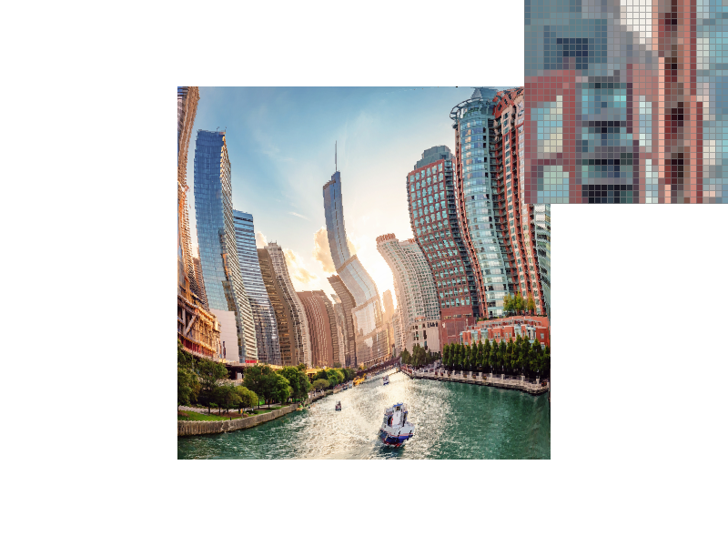

Overview
In this project, I implemented rasterization of triangles as well as multiple different forms of antialiasing such as supersampling, bilinear filtering, and level sampling. I also learned how to transform polygons to create new shapes such as cubeman. I believe that these are the basic roots of computer graphics and techniques applied in this project such as linear interpolation has several uses. As I completed this project, I found that there are many ways to perform the same task using the same basic tools.
Section I: Rasterization
Part 1: Rasterizing single-color triangles
In this task, we rasterize triangles given a color and three (x,y) points: p0, p1, p2.
Point-In-Triangle Testing
Using these three points, we calculate all three tangent vectors between points p0, p1, and p2.The tangent vectors are calculated as follows:
- T1 = P1 - P0 = (x1 - x0, y1 - y0)
- T2 = P2 - P1 = (x2 - x1, y2 - y1)
- T3 = P0 - P2 = (x0 - x2, y0 - y2)
The normal/perpendicular vectors of each tangent vector can then be obtained by swapping x and y and negating y:
- N1 = (-T1.y,T1.x)
- N2 = (-T2.y,T2.x)
- N3 = (-T3.y,T3.x)
It makes sense that the points we want to sample should be relatively close to the triangle as sampling every pixel in the framebuffer per triangle would be extremely costly and inefficient. In my implementation, I determined the minimum X and Y values as well as the maximum X and Y values based on the given three points. Sampling every pixel between the minimum and maximum X and Y values gives us a decent approximation of where all the points that would be in the triangle will be. Importantly, we want to sample in the middle of each pixel so we must add .5 to both x and y values of the sampling point.
For every point that we are sampling, we generate a sampling vector to that point from each point p0, p1, and p2.
By getting the dot product of the sampling vector with origin p0 and the normal vector with the same origin point (N1), we obtain a value that determines if the sampling vector is on the same side as the normal vector relative to the tangent vector. Two more values are obtained by performing the same calculation with sampling vectors of origin p1 and p2.
After obtaining all three values, We can determine if the sampled point is inside the triangle formed by points p0, p1, and p2.
If all three values have the same sign, then the point is inside the triangle because by calculating the tangent vectors in a clockwise/counter-clockwise fashion, the normal vectors will all point outward or all point inward.
- If the normal vectors all point inward and the point is inside the triangle, then we obtain values all greater than 0.
- If the normal vectors all point outward and the point is inside the triangle, then we obtain values all less than 0.
If either condition is satisfied, then we fill in the pixel corresponding to that sampled point with the provided color value.
Efficiency
By sampling only the points between the minimum and maximum X and Y points, we are basically sampling the points that form a box around the triangle. This algorithm is no worse than one that checks each sample within the bounding box of the triangle because that is exactly what it does.In the screenshot below, we can observe a sampled image of basic/test4.svg. As you can see, the bottom right corner of the image has some aliasing.

|
Part 2: Antialiasing triangles
We are tasked with smoothing out our triangles! To accomplish this task, we can perform antialiasing by supersampling. Supersampling is when we sample more than one location per pixel. You may ask, why are we sampling more than once per pixel if we are still limited to one color per pixel? The solution is simple, we average the samples and output the average color! This is a more accurate representation of what is going on within each pixel and can produce better looking images at the cost of performance.
Antialiasing Procedure and Modifications to Rasterization Pipeline
In order to perform supersampling, our sample buffer needs to be modified to support the increased number of samples per pixel (The sample buffer is a 1-dimensional array storing Color objects for each sample location). This can be accomplished by resizing the sample buffer to: width * height * sample rate.Now, we must determine the locations in each pixel to sample. Ideally, we choose locations that are equally distributed. By splitting the pixel into a grid containing the same number of boxes as the sampling rate, we have essentially split up the pixel into multiple pixels. We can sample the center of each box and determine whether each sample location is inside the triangle using our Point-in-Triangle test developed in the previous task. The result is outputted to the sample buffer in sequential order at location: [x*sample_rate + y*sample_rate*width + sample #] for averaging when we output to the frame buffer.
Frame Buffer: The frame buffer is the final place in our algorithm to send pixel data so that it can be rendered to the display. As such, its size is fixed and we can only write one RGB value per pixel.
At the last step, when we output to the frame buffer, we must downsample by averaging the n samples per pixel that are in the sample buffer at locations: [x*sample_rate + y*sample_rate*width] - [x*sample_rate + y*sample_rate*width + sample_rate] so that we can provide a single approximated color to the frame buffer.Why is supersampling useful?
Supersampling can allow for higher image quality at the cost of performance. We are able to sample at a higher frequency than the target resolution and downsample to obtain a more accurate image and remove aliasing artifacts.In the screenshots below, we can observe multiple sampled images of basic/test4.svg. As we increase the sampling rate per pixel, you can begin to see fewer artifacts. This is the result of averaging the boxes within each pixel. Instead of coloring a pixel on the edge entirely or none at all, we can reach a point in the middle which is a lighter shade of the triangle's color.
|

|

|
|

|
Part 3: Transforms
In task 3, transform matrices were applied to polygons so that we can rotate, scale, and translate them!
Cubeman!
|

|
Section II: Sampling
Part 4: Barycentric coordinates
Barycentric coordinates are values that represent proportions within a triangle.
They are basically weights for each vertex and when applied on vertex values, we can interpolate the values to get a weighted average of those values.
The vertex values can be anything such as colors, coordinates, and vectors.
When applied to colors, barycentric coordinates produce a weighted "blend" of the three colors.
Take a look at the image below. Each vertex is colored red, green, or blue. Between each vertex however, we can leverage barycentric coordinates to produce a blended color.
|

|

|
Part 5: "Pixel sampling" for texture mapping
Pixel sampling is when we sample a texture for its color at a given texture coordinate that maps to a specific pixel coordinate on the screen.
To implement texture mapping on each triangle, we must obtain the coordinates of each vertex in terms of pixel location and corresponding texture location. Within the triangle, each pixel location corresponds to a specific texture location and we can obtain the texture location for any given pixel using barycentric coordinates. After obtaining the texture location (u,v), we can begin sampling from the texture. However, we can only sample from the texture at fixed texture locations(texels). As such, we have two pixel sampling methods: nearest and bilinear.- Nearest is simple, it samples the closest texture value from our texture location (u,v).
- Bilinear uses linear interpolation to calculate a weighted value using proportional distances from the four closest texture values that are near our texture location (u,v). Bilinear sampling produces a more accurate color for our texture location than nearest sampling.
Here are four images using nearest sampling and bilinear sampling at 1 sample per pixel and 16 samples per pixel.
|
|
|
|
|
|
Observation
We can see a large difference between the two sampling methods most notably at 1 sample per pixel because this is when the nyquist frequency low enough where nearest sampling will generate graphical artifacts while bilinear sampling will not. Supersampling removes aliasing by increasing the sampling rate thus increasing the nyquist frequency whereas bilinear sampling removes the high frequencies above the nyquist frequency by creating a continuous function across the texel values. Even at 1 sample per pixel, bilinear sampling works extremely well because of the continuous function and we can see the difference in that the image using bilinear sampling is smoother.Part 6: "Level sampling" with mipmaps for texture mapping
When there are more texels than pixels for a given map, this can cause our sampling to be inaccurate due to sampling between large amounts texels. In order to combat this, we sample from downsampled versions of the texture image such that we are sampling from an image that has a similar amount of texels to our amount of pixels in the triangle.Level sampling: Sampling at different mipmap levels based on distances of neighboring pixels in texture coordinates.
By leveraging different levels of downsampling, we are able to reduce aliasing especially in the case of texture minification or shrinking the picture. When we shrink the picture, we will eventually end up with more texels than pixels. Now the question becomes how can we represent the color of all the texels that are closer to that pixel than other pixels? Mipmaps are downsampled versions of the texture image that take the average of four texels and average them together. We can obtain numerous mipmap levels by constantly halving the resolution of the texture image in both x and y dimensions. By sampling at the correct mipmap level, we can obtain a color that is an accurate average of however many neighboring texels the pixel needs to represent. The amount of texels each pixel needs to represent is calculated based on the maximum of the distance of the pixel from its top and right neighbor after being translated into texture coordinates at full resolution (mipmap level 0). We can take the log of that distance to obtain the desired mipmap level.Tradeoffs between Supersampling, Pixel Sampling, and Level Sampling
Each method reduces aliasing in their own way to their own degree. These different implementations however, come at different performance costs and perform at different speeds.Supersampling
- Speed: Supersampling at n times per pixel costs roughly n times the number of computation power. It is very slow when we are supersampling in high numbers such as 9x or 16x.
- Memory: Supersampling costs n times more memory because the sample buffer needs to be n times larger.
- Antialiasing power: Good antialiasing power at all resolutions.
Pixel Sampling
- Speed: Nearest sampling does not use much computation because it is only 1 texel read. Bilinear filtering however, takes 4 texel reads and 3 linear interpolation calculations thus making it slower than nearest sampling.
- Memory: little to no extra memory required.
- Antialiasing power: Bilinear filtering produces a decently good approximation of the texture.
Level Sampling
- Speed: Fairly fast due to precomputation and storage of mipmaps.
- Memory: Level sampling uses 33% extra memory
- Antialiasing power: Level sampling at nearest mipmap level still produces a few artifacts due to sudden switching between mipmap levels. This can be improved upon by using linear interpolation of adjacent mipmap levels. Level sampling does well in most cases. However, mipmaps have limitations such as overblur when we reach really low resolution mipmaps.
|
|

|
|

|
|